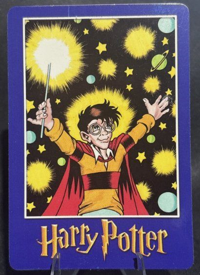
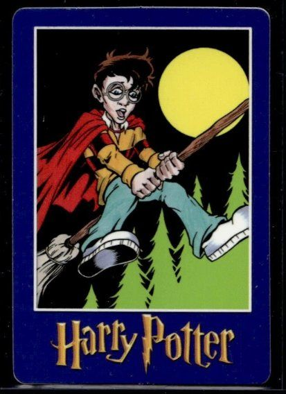
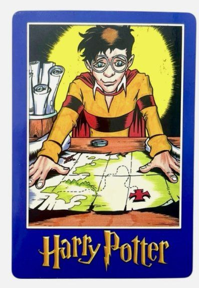
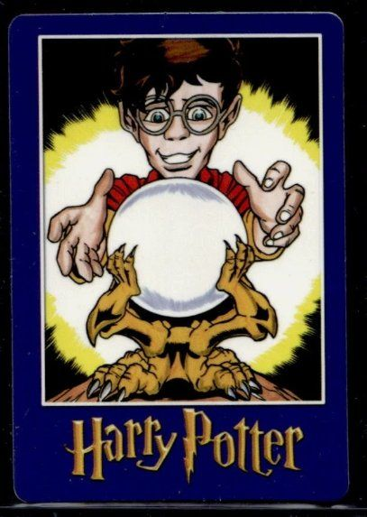
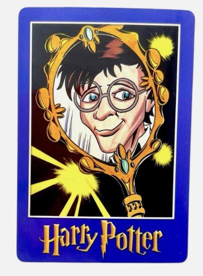
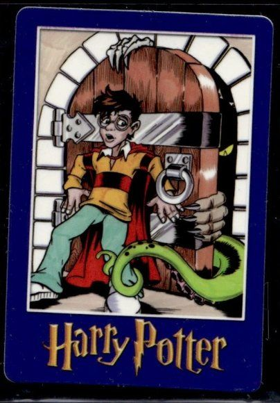
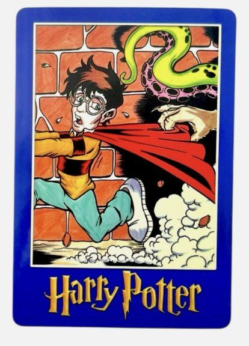
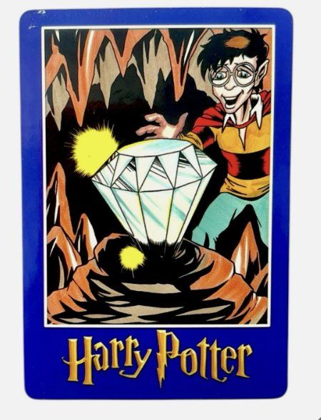
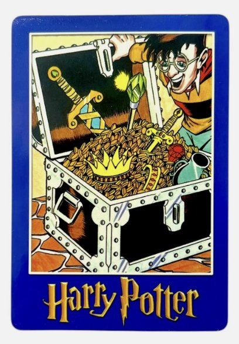
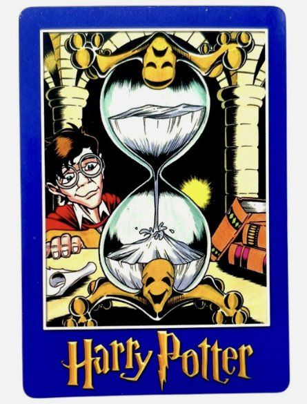

Ranking the Ten Harry Potter “Magic Will Happen” Vending Cards
In my previous article, I discussed the Magic Will Happen vending cards, which I found intriguing but whose obscure origins and unlicensed status left me unsure how collectors would respond. In the time since, interest is clearly growing. Recent eBay sales, including two separate Harry Potter cards that sold for $1,000 each on October 14, 2026 (confirmed on both eBay and 130point.com), suggest collectors are beginning to pay attention, perhaps drawn by the possibility that these could be the first Harry Potter cards ever produced, as well as their scarcity. Whether this enthusiasm leads to lasting recognition remains uncertain, but it’s clear these cards are starting to catch the eye of Harry Potter collectors. Given that growing interest, I thought it would be worthwhile to take a closer look at the ten Harry Potter character cards in the set. These are arguably the most collectible cards in the issue, and I’ll be ranking them individually based on their appeal, artwork, and place in Harry Potter trading card history.
A Note Before the Rankings
Of course, this is a subjective exercise. I’ll be considering both the historical significance and aesthetic appeal of each card, but naturally every collector will have their own opinions. That’s part of what makes collecting so interesting. I’d love to hear how others would rank these cards, so feel free to reach out to me on X or Instagram to share your thoughts.
For clarity, I’ve assigned informal names to the ten Harry Potter cards discussed below. These names are simply my own and were not assigned by the manufacturer. Feel free to use them or ignore them as you see fit.
1. Star Harry

Star Harry is the obvious grail. Arms outstretched, wand blazing, a halo of light behind him and planets and stars all around, this is Harry as a legendary wizard. The black background makes the yellows and teals glow, the composition is balanced and bold, and the whole card is the most visually striking of the ten. It’s also the one that best captures what the character would become.
2. Nimbus Harry

Nimbus Harry puts our protagonist on his famous broom, cape streaming beneath a big yellow moon. The simple background keeps the focus on the full figure and the thrill of flight.
3. Marauder’s Map Harry

Marauder’s Map Harry puts Harry at the center of the card, bent over his famous map in a glow of yellow light. The map is an important part of the books, and this card catches him studying it.
4. Crystal Ball Harry

Crystal Ball Harry shows a delighted Harry reaching for a glowing sphere in golden claws. It could be a crystal ball, or possibly Norbert’s egg from the first book. Either way, he looks like he’s found treasure.
5. Erised Harry

Erised Harry shows Harry in an ornate gold mirror ringed with sparkles of light, a nod to the Mirror of Erised. It’s a true portrait, and a true “Harry Potter” card in the same vein as Star Harry and Nimbus Harry.
6. Third-Floor Harry

Third-Floor Harry, a nod to the forbidden third-floor corridor, shows Harry holding back a menacing figure behind a heavy wooden door. The glowing yellow eye is the standout detail, and it reminds me of the Voldemort cards in the 2001 Panini Illustrated set.
7. Harry Chased

Harry Chased marks the start of the transition zone in the set, where Harry is no longer the focal point of the art. This action shot has him running from a large, clawed hand and a tentacle looming overhead, cape snagged and dust flying.
8. Gem Harry

Gem Harry is where Harry officially becomes a peripheral figure in the art. He’s discovering a huge faceted gem in a glowing cave, and no obvious scene from the books matches it. It might be a nod to the Philosopher’s Stone or Gringotts, or just an invention of the artist.
9. Gringotts Harry

An overflowing treasure chest dominates this scene, brimming with gold, a crown, swords and jewels, while an ecstatic Harry in the corner takes it all in. The name is a nod to Gringotts and Harry’s first look at the family fortune.
10. Hourglass Harry

There’s a lot going on in the art on Hourglass Harry, and it takes a double take to be sure Harry is on the card at all. A huge hourglass on an ornate frame, with grinning faces at top and bottom, dominates the scene, while Harry sits tucked into the left edge at his desk among the scrolls and books, almost a bystander in his own card.